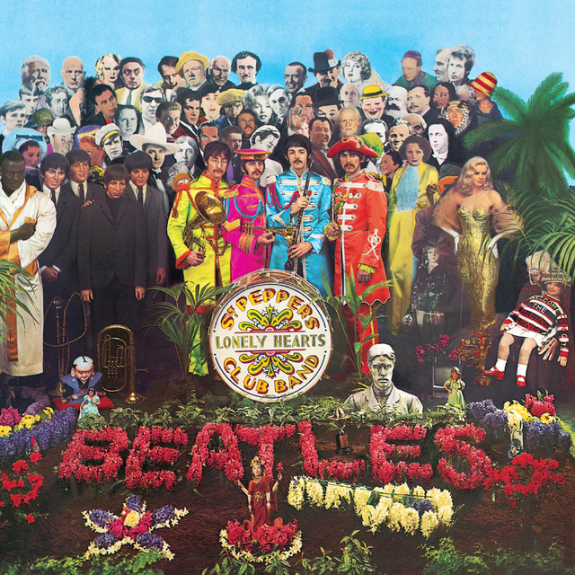
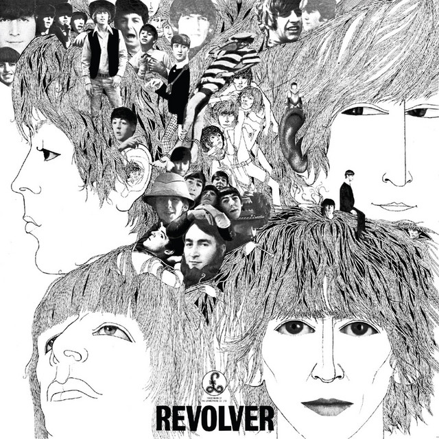
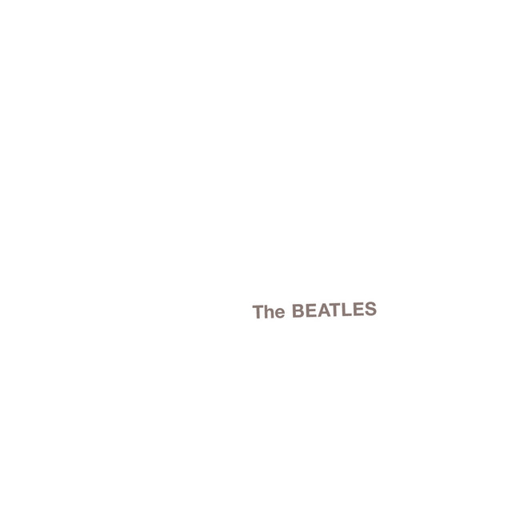
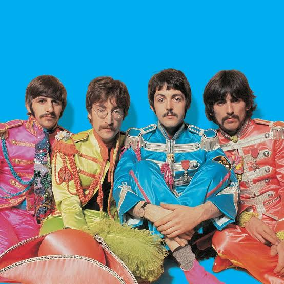

The Beatles foi uma banda de rock britânica formada na cidade de Liverpool em 1960. Reconhecida como a maior e mais influente banda da história da música popular, foi essencial para o desenvolvimento da contracultura da década de 1960. Experimentaram diversos gêneros, desde baladas pop e a música indiana até a música psicodélica e o hard rock, incorporando elementos clássicos de maneiras inovadoras. A banda adquiriu popularidade no Reino Unido com seu primeiro sucesso "Love Me Do" no final de 1962, ganhando o apelido "The Fab Four".
Principais integrantes:Os Beatles tiveram origem na banda The Quarrymen, formada por John Lennon. Com a entrada de Paul McCartney, George Harrison e Stuart Sutcliffe, o grupo passou por diferentes nomes até se tornar The Beatles, em 1960. No mesmo ano, iniciou uma temporada de apresentações em Hamburgo, Alemanha, experiência que foi essencial para seu desenvolvimento musical. Durante esse período, Sutcliffe deixou a banda, McCartney assumiu o baixo e o grupo realizou suas primeiras gravações ao lado de Tony Sheridan.
De volta a Liverpool, os Beatles ganharam destaque com apresentações no Cavern Club, onde chamaram a atenção de Brian Epstein, que se tornou empresário da banda em 1962. Com sua gestão, assinaram contrato com a Parlophone (EMI), produzidos por George Martin. No mesmo ano, Ringo Starr substituiu Pete Best na bateria, formando a composição definitiva do grupo. O lançamento de "Love Me Do" marcou o início do sucesso comercial dos Beatles.
Após o lançamento de Please Please Me (1963), os Beatles alcançaram enorme sucesso no Reino Unido com sucessivos singles e álbuns no topo das paradas. A intensa cobertura da imprensa, o carisma da banda e a reação apaixonada do público deram origem ao fenômeno conhecido como Beatlemania, marcado por multidões de fãs em shows, aeroportos e eventos. O sucesso britânico rapidamente atravessou o Atlântico: em 1964, a primeira visita aos Estados Unidos e a apresentação no programa The Ed Sullivan Show consolidaram a fama internacional do grupo e impulsionaram a chamada Invasão Britânica, transformando os Beatles em um fenômeno mundial.
Os Beatles evoluíram de uma banda de rock e pop voltada para singles de sucesso para um grupo que revolucionou a música com novas sonoridades e técnicas de estúdio. A partir de Rubber Soul (1965), passaram a explorar influências como a música indiana e composições mais elaboradas. Em Revolver (1966), ampliaram essa experimentação e, após encerrarem as turnês, dedicaram-se ao trabalho em estúdio, culminando no lançamento de Sgt. Pepper's Lonely Hearts Club Band (1967), um dos álbuns mais inovadores da história da música.
| Período | Principais fases da banda |
|---|---|
| 1963–1964 | Rock and roll e pop com foco em singles de sucesso. |
| 1965 | Rubber Soul: Início das experimentações musicais e influência da música indiana. |
| 1966 | Revolver: Letras mais maduras, novos arranjos e maior complexidade musical. |
| 1966 em diante | Fim das turnês e dedicação exclusiva ao trabalho em estúdio. |
| 1967 | Sgt. Pepper's Lonely Hearts Club Band: Marco da inovação musical e do conceito de álbum integrado. |
| Capa | Nome | Data de lançamento | |
|---|---|---|---|
 |
Sgt. Pepper's Lonely Hearts Club Band | 1967 | |
|
Abbey Road | 1969 | |
 |
Revolver | 1966 | |
|
Rubber Soul | 1965 | |
 |
The Beatles (White Album) | 1968 |
Os Beatles marcaram a história da música ao reinventar a forma de compor, gravar e produzir canções. Sua criatividade e constante busca por inovação influenciaram gerações de artistas e ajudaram a moldar o rock e a música popular como conhecemos hoje. Mesmo décadas após o fim da banda, suas músicas continuam sendo ouvidas e seu legado permanece como uma das maiores referências da cultura musical.